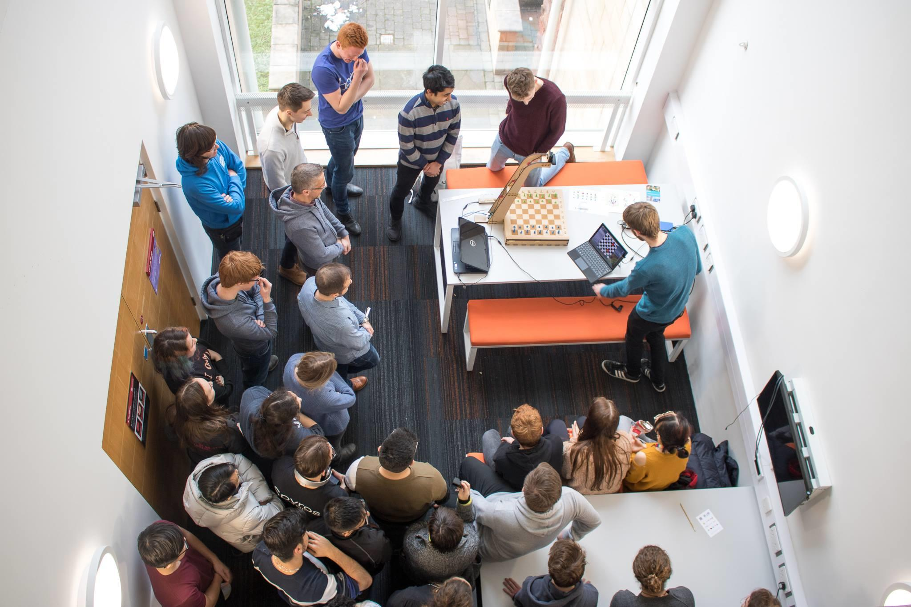
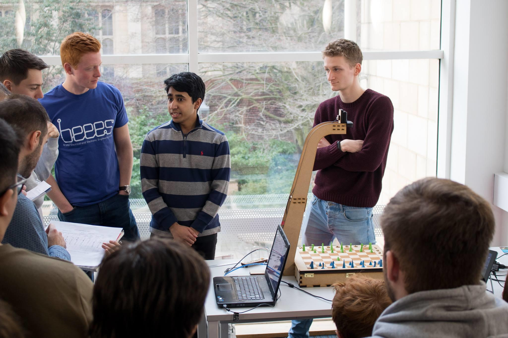
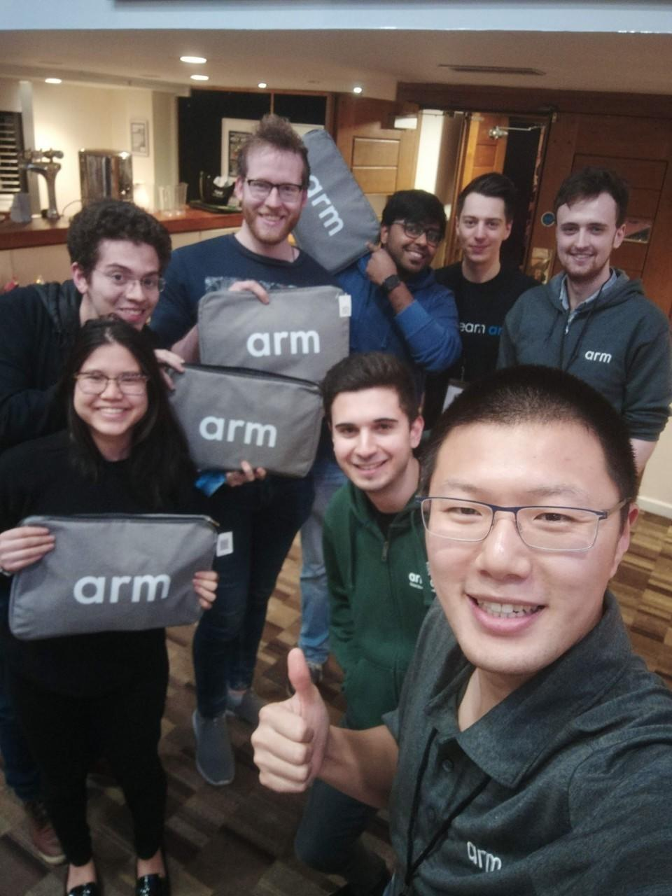
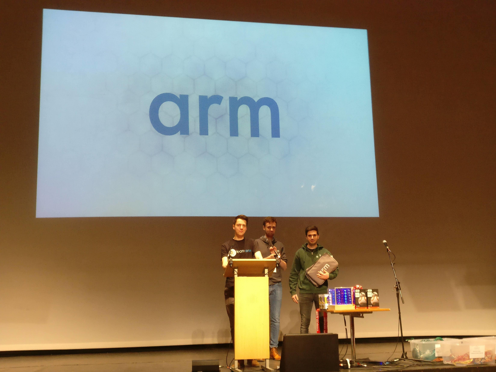

Lessons from Hackathons
At the beginning of 2019, I was involved in two Hackathons with Arm. The first was ‘Hack Cambridge 4D’, an annual event hosted by the University of Cambridge. It is part of the MLH (Major League Hacking) network and draws in a large crowd of students from Universities across Europe and farther afield (there were several students from the US and Canada!). I was involved in the judging process for Arm in which we were delivering the best ‘Hardwar Hack’. This prize was awarded to the team that came up with the most creative project that used at least one hardware component. We decided to award the prize to team ‘Pill it Up’ for their creative use of a Raspberry Pi and Amazon Alexa smart speaker to implement a computer vision to successfully categorise medical tablets.
Two weeks later in early February, I was co-directing a Hackathon at the University of Bristol alongside the Bristol Electrical and Electronic Engineering Society (BEEES). The event was themed around Machine Learning and bought in over 50 students who built a range of exciting projects including a solar flare detector and an algorithm that tried to predict the winner of the event.... (to some success). I delivered a talk on 'Machine Learning at the Edge' (of the network) to showcase Arm's involvement in this area. The winning team was 'Eng Des' that constructed a 3D printed chessboard that used computer vision and a CNN (convoluted neural network) to map the movement of chess pieces.
I had a lot of fun attending the events and they were both great successes. Reflecting on these two experiences, I found they offered great insight into the importance of operations and leadership:
- Ownership breads success. Arguably the most useful insight from the events was that to do something successfully you need to claim strong ownership. I believe this relies on understanding and outlining vision, mission, strategy, objectives and metrics to a project. Granted for a fun event like a Hackathon, there is no need to go into deep detail but the principles around these categories still apply.
- Understanding technical development. Hackathons are creative endeavours that bring together a range of people with complimenting skills sets. Technical development is only one aspects of a Hackathon. The ability to understand the underlying principles and then marketing the idea is a completely different game. Some groups did this well, others didn’t. The events highlighted the value in being able to connect technical and business people together.
- How to tell a story. Hackathons are dynamic and the fast paced. It is common for the final idea to have pivoted several times from the get-go. There was only a small amount of time to judge each group so the ability to outline a problem, attempts to solve it and what has been achieved. The best groups were those that understood the only visibility we had into their project was a brief two/three-minute pitch at the end. Being able to successfully convey a complex idea is one of the most important aspects of the event.
- Making decisions under uncertainty. Not everything is going to go to plan with hosting an event. 24 hours is a short time (or long if you were up all night) to get something right so you need to be able to adapt quickly. Changing your pitch deck an hour before a presentation to add in a new idea or using Excel to reduce the tallying of scores (before catching a train) were two things I did not anticipate. Constantly assessing the how and why of doing something often leads to the greatest (10X) insights. These insights were much more important then stressing over the detail in slide 7.
- Strong communication skills. Organising an event is tough work. Communicating with different groups of people to make sure that everyone is aligned is incredibly important for the success of the event. Making sure that message is clear ensures minimal back and forth correspondence and saves a tremendous amount of time. Adapt your communication to different audiences, some groups will be easier to work with than others, try and be clear and brief regardless.



